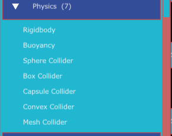
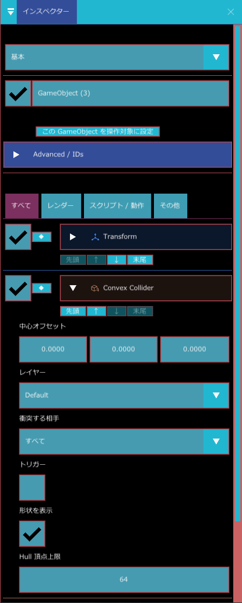
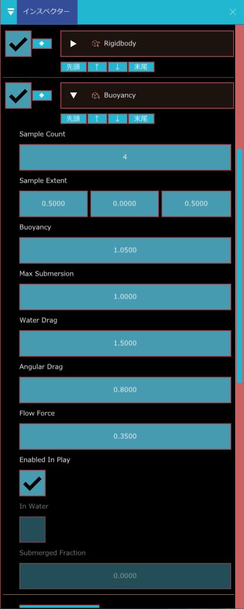
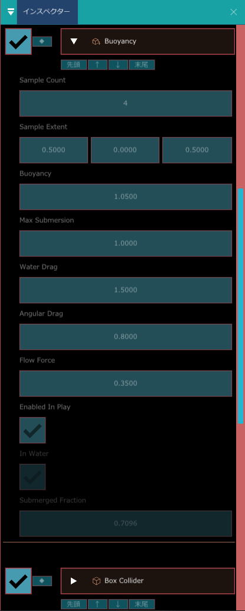

物理（Rigidbody と Collider）
物が落ちる、ぶつかって止まる、跳ね返る、といった動きを作るコンポーネントです。2 種類の役割があります。
- Collider（当たり判定）：物の「形」です。球、箱、カプセル、メッシュの 4 種類があります。
- Rigidbody（剛体）：重さや速度を持たせ、重力や衝突で動くようにします。形は同じ GameObject の Collider を使います。
床や壁のように動かない物には Collider だけを付けます。落ちたり転がったりする物には Collider と Rigidbody の両方を付けます。
こんなときに使う
- 物を重力で落とす、ぶつかって止める、跳ね返らせるなど、物理で動かしたいとき（Rigidbody と Collider）
- 壁や床など、動かないけれど当たる物を作りたいとき（Collider だけ）
- 入ると何かが起きるエリア（ゴール、ダメージを受ける床など）を作りたいとき（Trigger）
- スクリプトから物に力を加えたり、速度を読んだりしたいとき
基本情報
| コンポーネント | コンポーネントを追加での場所 | 1 つの GameObject に | 推奨 |
|---|---|---|---|
| Rigidbody | Physics > Rigidbody | 1 つだけ | Sphere / Box / Capsule Collider |
| Sphere Collider | Physics > Sphere Collider | いくつでも | |
| Box Collider | Physics > Box Collider | いくつでも | |
| Capsule Collider | Physics > Capsule Collider | いくつでも | |
| Mesh Collider | Physics > Mesh Collider | いくつでも | |
| Convex Collider | Physics > Convex Collider | いくつでも | |
| Buoyancy | Physics > Buoyancy | 1 つだけ | Rigidbody |
物理が動く場面
- 物理の計算はゲームの実行中だけ行われます。エディターで編集しているときは、Rigidbody を付けても物は落ちません。
- 計算は 1/60 秒ごとの決まった間隔で行われます。画面の更新が遅れたときは、1 フレームで最大 5 回まで計算して追いつきます。それ以上の遅れは切り捨てます。
- 重力は下向きに 9.81（毎秒毎秒）です。
Rigidbody
| 表示名 | 内部名 | 種類 | 既定値 | 範囲 | 説明 |
|---|---|---|---|---|---|
| 種別 | body_type | 選択 | 動的 | 静的、キネマティック、動的（下の表） | |
| 質量 | mass | 小数 | 1 | 0.001〜10000 | 重さ。ぶつかったときに、重い物ほど押されにくくなります |
| 移動の減衰 | linear_damping | 小数 | 0.05 | 0〜10 | 大きいほど、移動の速さが早く落ちます（空気抵抗のようなもの） |
| 回転の減衰 | angular_damping | 小数 | 0.05 | 0〜10 | 大きいほど、回転が早く止まります |
| 重力の倍率 | gravity_scale | 小数 | 1 | -10〜10 | 重力に掛ける倍率。0 で重力なし、マイナスで上へ落ちます |
| 反発 | restitution | 小数 | 0 | 0〜1 | 跳ね返りやすさ。0 で跳ねず、1 でほぼ同じ勢いで跳ね返ります |
| 摩擦 | friction | 小数 | 0.5 | 0〜2 | 滑りにくさ。0 でつるつる滑ります |
| 位置を固定 | freeze_position | 3 つの小数 | 0, 0, 0 | X・Y・Z のうち 0.5 以上にした軸の方向へは動かなくなります。たとえば 0, 1, 0 で上下に動かなくなります | |
| 回転を固定 | freeze_rotation | 3 つの小数 | 0, 0, 0 | X・Y・Z のうち 0.5 以上にした軸のまわりには回らなくなります | |
| 停止状態で開始 | start_asleep | オン・オフ | オフ | オンにすると、力を加えられるまで止まった状態で始まります | |
| 高速移動の貫通対策 | use_ccd | オン・オフ | オフ | オンにすると、毎回、動いた道筋に沿って当たりを調べ、最初に当たった物で止まります。オフでも、1 回の計算で自分の大きさ以上動くときは同じ調べ方に切り替わります | |
| 移動速度 | linear_velocity | 3 つの小数（読み取り専用） | 今の移動の速さ。実行中だけ変わり、保存されません | ||
| 回転速度 | angular_velocity | 3 つの小数（読み取り専用） | 今の回転の速さ。実行中だけ変わり、保存されません | ||
| 停止中 | is_sleeping | オン・オフ（読み取り専用） | 止まっていて計算を休んでいるか（停止） | ||
| 状態 | status | 文字（読み取り専用） | 設定に問題があるときの警告（下の表） |
種別
| 種別 | 動き | 使う場面 |
|---|---|---|
| 静的 | 動きません。ほかの物がぶつかると止められます | 動かない障害物 |
| キネマティック | 重力や衝突では動きません。Transform の位置（Motion やスクリプトで動かした位置）に従います。ぶつかった動的な物を押しのけます | 動く床、エレベーター |
| 動的 | 重力、力、衝突で動きます | 落ちる箱、転がるボール |
Rigidbody の形
- Rigidbody は、同じ GameObject に付いている一番上の Collider 1 つを形として使います。
- 動的な Rigidbody の形になれるのは Sphere・Box・Capsule Collider です。Mesh Collider（や地形の Collider）を動的にすると、警告が出てキネマティックとして扱われます。
- トリガーにした Collider は、Rigidbody の形として押し戻しに使われません。
- Rigidbody の付いていない GameObject の Collider は、動かない障害物として扱われます。
2 つの物がぶつかったとき
- 反発は、2 つの物の 反発 のうち小さい方が使われます。
- 摩擦は、2 つの物の 摩擦 を掛けた値の平方根が使われます。Rigidbody の無い物の摩擦は 0.5、反発は 0 として計算します。
停止
動的な物の移動と回転の速さが、どちらも 0.05 より遅い状態が 0.5 秒続くと、止まったものとして計算を休みます（停止中 がオン）。力を加えたり、ほかの物が当たったりすると、また動き出します。
状態の警告
| 表示 | 意味 |
|---|---|
| Collider がありません。衝突しない質点として扱います。 | 同じ GameObject に Collider が無いので、何にもぶつからずに落ち続けます |
| Trigger Collider は Rigidbody の押し戻し対象になりません。 | 一番上の Collider がトリガーです |
| Mesh / Landscape は Dynamic に対応しないため、Kinematic として扱います。 | メッシュや地形の Collider で動的を選んでいます |
C# スクリプトから操作する
C# では RigidbodyComponent 型で操作します。
| メンバー | 働き |
|---|---|
AddForce(force) | 力を加えます。次の計算で、質量で割った加速として速度に加わります。止まっていた物は動き出します |
AddTorque(torque) | 回転させる力を加えます |
AddImpulse(impulse) | 瞬間的な力。速度に「impulse ÷ 質量」をすぐ足します |
ClearForces() | まだ計算に使われていない力を消します |
Velocity、SetVelocity(value) | 移動の速さの読み書き |
AngularVelocity、SetAngularVelocity(value) | 回転の速さの読み書き |
Teleport(position, rotationEuler) | 位置と回転を一気に変えます。速度はそのまま残ります |
BodyType、Mass、GravityScale など | プロパティの読み書き（BodyType は 0 = 静的、1 = キネマティック、2 = 動的） |
Collider の共通項目
| 表示名 | 内部名 | 種類 | 既定値 | 説明 |
|---|---|---|---|---|
| 中心オフセット | center_offset | 3 つの小数 | 0, 0, 0 | 形の中心を GameObject の位置からずらします |
| レイヤー | collision_layer | レイヤー | Default | この Collider が属するグループ（レイヤー） |
| 衝突する相手 | collision_mask | レイヤーの組み合わせ | すべて | ぶつかる相手のレイヤー。お互いが相手のレイヤーを含んでいるときだけぶつかります |
| トリガー | is_trigger | オン・オフ | オフ | オンにすると、ほかの物が通り抜けます。押し戻しと接地には使われず、代わりにトリガーのイベントが届きます |
| 形状を表示 | debug_draw | オン・オフ | オン | シーンビューに形を線で表示します（形を確かめる） |
ほかに、GameObject の中で Collider を区別するための番号（collider_key）が自動で付きます。インスペクターには表示されません。
レイヤー
レイヤーは次の 8 つで固定です。名前は変えられません。
| 番号 | 名前 |
|---|---|
| 0 | Default |
| 1 | Player |
| 2 | Enemy |
| 3 | Environment |
| 4 | Player Attack |
| 5 | Enemy Attack |
| 6 | Projectile |
| 7 | Trigger |
例：Player の Collider の 衝突する相手 から Player Attack を外すと、自分の攻撃に当たらなくなります。片方だけ外しても、ぶつからなくなります。
Sphere Collider
| 表示名 | 内部名 | 種類 | 既定値 | 範囲 | 説明 |
|---|---|---|---|---|---|
| 半径 | radius | 小数 | 0.38 | 0.01〜100 | 球の半径。GameObject の拡大率（3 方向のうち最大のもの）が掛かります |
| 接触余白 | skin_width | 小数 | 0.015 | 0〜1 | Character Motor や Nav Agent がこの球を移動に使うとき、壁や床との間に空けるすき間 |
| 歩ける傾斜のしきい値 | walkable_normal_y | 小数 | 0.25 | -1〜1 | Character Motor や Nav Agent がこの球を移動に使うとき、地面とみなす面の傾き。面の向きの上向きの成分がこの値以上の面だけを地面とします（1 が水平な床、0 が垂直な壁） |
拡大率が軸ごとに違うと、球は楕円にならず、「拡大率が軸ごとに異なります。球は楕円体になりませんので、最大軸に合わせた大きめの半径として扱います。」と警告が出ます。半径が 0 以下のときは「半径が 0 以下です。この Collider は衝突しません。」と出ます。
Box Collider
| 表示名 | 内部名 | 種類 | 既定値 | 説明 |
|---|---|---|---|---|
| サイズ | size | 3 つの小数 | 1, 1, 1 | 箱の辺の長さ（半分の長さではありません）。GameObject の拡大率が軸ごとに掛かります |
サイズに 0 以下の軸があると「サイズに 0 以下の軸があります。この Collider は衝突しません。」と出ます。回転の扱いは Rigidbody の形 の注意を見てください。
Capsule Collider
| 表示名 | 内部名 | 種類 | 既定値 | 範囲 | 説明 |
|---|---|---|---|---|---|
| 半径 | radius | 小数 | 0.4 | 0.01〜100 | カプセルの太さ。軸と直角な 2 方向の拡大率のうち大きい方が掛かります |
| 高さ | height | 小数 | 1.8 | 0.01〜200 | 両端の丸い部分を含めた全体の長さ。軸方向の拡大率が掛かります |
| 軸 | axis | 選択 | Y | カプセルの向き。X、Y、Z。GameObject の回転に合わせて傾きます |
高さが直径（半径の 2 倍）より小さいときは、判定は直径まで伸ばした高さで行われ、「高さが直径 (値) を下回っています。…」と警告が出ます。
Mesh Collider
モデルの三角形をそのまま当たり判定にします。地形や建物などの動かない環境に使います。
| 表示名 | 内部名 | 種類 | 既定値 | 範囲 | 説明 |
|---|---|---|---|---|---|
| メッシュの取得元 | mesh_source | 選択 | Renderer のメッシュ | Renderer のメッシュ：同じ GameObject の Mesh Renderer、無ければ Skinned Mesh Renderer の メッシュ を使います（Primitive Mesh Renderer の形は使えません）。衝突専用メッシュ：下の欄のモデルを使います | |
| 衝突専用メッシュ | mesh_asset | アセット（モデル） | （空） | 当たり判定だけに使う、三角形の少ないモデル | |
| セルサイズ | cook_cell_size | 小数 | 4 | 0.05〜100 | 当たりを速く調べるための区切りの大きさ。小さいほど速く調べられますが、メモリを多く使います |
| 両面に当たる | double_sided | オン・オフ | オン | この版では、オフにしても当たり方は変わりません（常に両面に当たります） | |
| 三角形を表示 | debug_draw_wireframe | オン・オフ | オフ | 三角形そのものを線で表示します（形を確かめる）。重いので必要なときだけ使います |
- 変形するモデル（骨で動くモデル）の動きには追従しません。
- プロジェクトパネルの SceneへModel配置時にMesh Colliderも追加 にチェックを付けてモデルを置くと、Renderer のメッシュを使う Mesh Collider が、レイヤー Environment で付きます（置き方）。
- トリガーにした Mesh Collider は、三角形ではなく、形を囲む箱の中に入ったかどうかで判定します。へこんだ形では、外側でも反応することがあります。正確に判定したい場所には Box・Sphere・Capsule のトリガーを使ってください。
Convex Collider（凸包）
点の集まりから「凸包（でっぱりだけでできた、へこみのない形）」を作り、それを当たり判定にする部品です。Mesh Collider は動かない物にしか使えませんが、Convex Collider は動く物（Rigidbody の Dynamic）にも使えます。破壊機能（Sliceable / Destructible）が、切った破片に付ける当たり判定として使っています。
SetVertices）か、破壊機能が自動で入れます。点を入れないまま追加すると、凸包が作られず、当たり判定として働きません（内部の状態は「凸形状の Cook には 4 頂点以上が必要です。」で、この文はインスペクターには表示されません）。手で置いた普通の小道具には、Box・Sphere・Capsule を使ってください。追加は コンポーネントを追加 > Physics (7) から行います。Physics には Rigidbody、Buoyancy、Sphere / Box / Capsule / Convex / Mesh Collider の 7 つが並びます。


| 表示名 | 内部名 | 種類 | 既定値 | 範囲 | 説明 |
|---|---|---|---|---|---|
| Hull 頂点上限 | vertex_limit | 整数 | 64 | 4〜255 | できあがる凸包の頂点数の上限です。大きいほど元の形に近くなり、小さいほど計算が軽くなります。値を変えると、凸包を作り直します |
ほかに、Collider の共通項目（中心オフセット、レイヤー、衝突する相手、トリガー、形状を表示）が使えます。凸包は非同期で作られるので、付けた直後の数フレームは「Cook 待ち」「Cook 中」の表示になり、その間は当たり判定が働きません。PhysX の物理エンジンで動いているときだけ使えます。
- へこんだ形（コの字など）は、へこみが埋まった形になります。
- 細かい凹凸が必要な床や壁には Mesh Collider、キャラクターの移動用には Sphere / Capsule Collider を使います。
Buoyancy（浮力）
水に入った Rigidbody に、浮く力・水の抵抗・水流で押される力を加える部品です。浮かぶ箱、流される小物、水面でゆれるボートなどに使います。水は Water Body が担当し、Buoyancy はその水面の高さを調べて力を計算します。
使う準備
- 浮かせたい GameObject に Rigidbody（種別は Dynamic）と Collider を付けます。
- 同じ GameObject に Buoyancy を追加します（Rigidbody が無くても付けられますが、推奨されています）。
- 水の GameObject の Water Body で、Gameplay Query と Allow Buoyancy がオン（既定でオン）であることを確かめます。
- ゲームを実行します。物体を水面より上から落とすと、水に入って浮き上がります。
Cube に Rigidbody、Box Collider、Buoyancy を付けて水面の近くに置いた例です。


| 表示名 | 内部名 | 種類 | 既定値 | 範囲 | 説明 |
|---|---|---|---|---|---|
| Sample Count | sample_count | 整数 | 4 | 1〜8 | 水面の高さを調べる点の数です。1 だと中心の 1 点だけ。2 以上だと下の Sample Extent の範囲に点を散らすので、水面で傾いたり揺れたりします |
| Sample Extent | sample_extent | 3 つの数 | 0.5, 0, 0.5 | 点を散らす範囲（GameObject の中心から X・Y・Z 方向）です。物体の大きさの半分くらいに合わせます | |
| Buoyancy | buoyancy | 小数 | 1.05 | 0〜10 | 浮く力の強さです。1 で重力とつり合い、それより大きいと浮き上がり、小さいと沈みます |
| Max Submersion | max_submersion | 小数 | 1 | 0.01〜100 | この深さまで沈むと浮力が最大になります。小さいほど、少し沈んだだけで強く押し返します |
| Water Drag | water_drag | 小数 | 1.5 | 0〜20 | 水中で動きを止める力（抵抗）です。大きいほど水の中で減速します |
| Angular Drag | angular_drag | 小数 | 0.8 | 0〜20 | 水中で回転を止める力です |
| Flow Force | flow_force | 小数 | 0.35 | 0〜20 | 水の流れで押される力の強さです。流れの無い水では影響しません |
| Enabled In Play | enabled_in_play | オン・オフ | オン | オフにすると、実行中も浮力を加えません | |
| In Water | in_water | 表示のみ | オフ | 実行中に、いま水に入っているかを表示します（保存されません） | |
| Submerged Fraction | submerged_fraction | 表示のみ | 0 | 実行中に、どれだけ沈んでいるかを 0〜1 で表示します |
調整のコツ
- 沈みすぎる：Buoyancy を上げるか、Rigidbody の質量を下げます。
- 浮き上がってもずっと揺れる・動き続ける：Water Drag と Angular Drag を上げます。
- 水面に置いても傾かない：Sample Count を 4 以上にし、Sample Extent を物体の広さに合わせます。
水に入った・出たときは、ゲーム内のイベント記録（WaterEntered / WaterExited）にも残ります。Rigidbody が Dynamic でないとき、ゲームを実行していないとき、水が無いときは何も起きません。
衝突とトリガーのイベント
ゲームの実行中、ぶつかったときや重なったときにイベントが送られます。C# スクリプトで受け取れます。
| イベント | 送られるとき |
|---|---|
| CollisionEnter / CollisionStay / CollisionExit | Rigidbody どうし、または Rigidbody と障害物が実際にぶつかったとき（両方の GameObject に届きます）。Character Motor が床や壁に触れたときにも届きます |
| TriggerEnter / TriggerStay / TriggerExit | トリガーの Collider に、別の GameObject のトリガーでない Collider が重なったとき（両方の GameObject に届きます）。レイヤーがお互いにぶつかる設定のときだけです。Rigidbody は要りません |
Enter は触れ始めたとき、Stay は触れている間の毎回、Exit は離れたとき（相手が消えたときを含む）です。CollisionEnter には、当たった位置、面の向き、相対速度、めり込みの深さなどが入ります。
トリガーの判定では、入ってくる側の形を、それを囲む球として扱います。そのため、実際に触れる少し手前で反応することがあります。
形を確かめる
- シーンビュー上部の コライダー にチェックを付けると、形状を表示 がオンの Collider の形が線で表示されます。
- Window > Collision Diagnostics の「衝突の診断」ウィンドウの 表示 で、境界ボックスを描く と Mesh の三角形を描く を選べます。Mesh Collider の三角形は、ここの Mesh の三角形を描く と、各 Collider の 三角形を表示 の両方がオンのときだけ表示されます。
使い方
箱を床に落とす
- 階層パネルの + 作成 > 3D Object > Plane で床を作り、コンポーネントを追加 > Physics > Box Collider を付けます。サイズ を 10, 0.1, 10 など、床の広さに合わせます。
- + 作成 > 3D Object > Cube で箱を作り、床より上に置きます。
- 箱に Box Collider と Rigidbody を付けます。
- ゲームを実行すると、箱が落ちて床で止まります。
通り抜けると反応するエリアを作る
- 空の GameObject に Box Collider を付け、トリガー をオンにします。
- サイズ と位置で、反応させたい範囲を決めます。
- C# スクリプトで TriggerEnter を受け取り、入ってきた相手に応じて処理します。